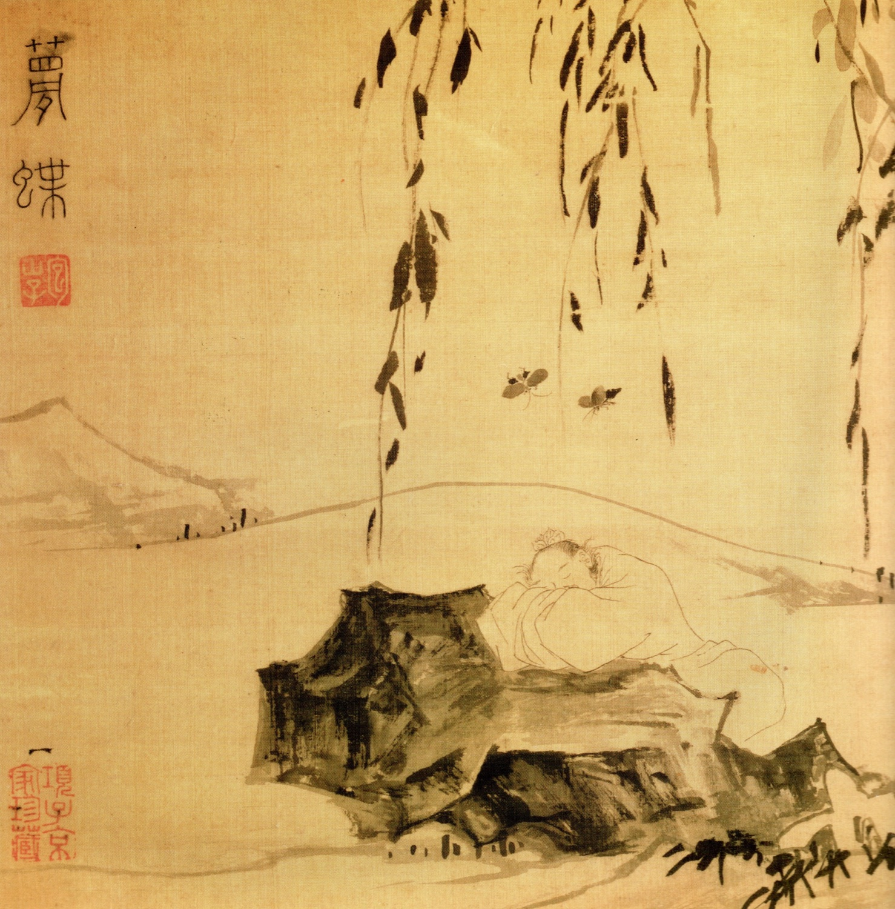

The Zhuangzi is a book of short, wild stories, written in China around 300 BCE. In one, a fish too big to measure turns into a bird and flies to the end of the world. In another, a cook carves an ox for nineteen years without ever dulling his knife. In the most famous, a man wakes from a dream of being a butterfly and cannot tell, now, which one he is. The stories are funny on purpose. They are also some of the sharpest thinking anyone has done about how a mind boxes itself in.
The book is named for its presumed author, Zhuang Zhou, though almost nothing about him can be confirmed from outside it. The one early biography is a short sketch by the historian Sima Qian, and even that looks pieced together from anecdotes in the Zhuangzi. He came from a place called Meng, held a minor job, and turned down at least one offer of high office because he would rather, he said, be a live turtle dragging its tail through the mud than a sacred dead one enshrined in a temple. His regular sparring partner is Hui Shi, a famous logician, who shows up to lose arguments.
The text we have is 33 chapters, and they are not one author's. The first seven, the Inner Chapters, are the oldest, the most coherent, and the ones most plausibly Zhuang Zhou's own. The rest, the Outer and Miscellaneous chapters, are by later followers and rival schools, gathered and trimmed into final shape around 300 CE by an editor named Guo Xiang, who cut a sprawling 52-chapter version down to the 33 we read. So this is less a single book than an anthology that grew up around a voice. This walk stays mostly in the Inner Chapters, with three of the best stories from later on.
The translation throughout is Brook Ziporyn's (Hackett, 2009 and 2020). Most translators turn Zhuangzi into a solemn sage. Ziporyn keeps him funny, which turns out to be the point. When a character is named for a joke, he translates the joke: the god of primordial chaos is Chaotic Blob, the two meddling gods are Swoosh and Oblivion, and the tree too foul to bother cutting is the Stinktree. He renders the Tao as the Course, the way you would talk about a river's course or letting something run its course. Each stop below gives you his words first, then unpacks them.
Stop 1 / Wandering Far and Unfettered
The fish that becomes a bird
Ziporyn / Chapter 1, the opening
There is a fish in the Northern Oblivion named Kun, and this Kun is quite huge, spanning who knows how many thousands of miles. He transforms into a bird named Peng, and this Peng has quite a back on him, stretching who knows how many thousands of miles. When he rouses himself and soars into the air, his wings are like clouds draped across the heavens.
The cicada and the fledgling dove laugh at him, saying, "We scurry up into the air, leaping from the elm to the sandalwood tree, and when we don't quite make it we just plummet to the ground. What's all this about ascending ninety thousand miles and heading south?" ... Such is the difference between the large and the small.
The book opens at maximum scale. A fish too big to measure becomes a bird too big to measure, and sets off on a ninety-thousand-mile flight to the far side of the world. Then the small birds laugh. Why would anyone go to all that trouble? You can get to the next tree on one hop.
The point is not that big beats small. It is that the quail genuinely cannot see what the great bird is doing. From the branch, ninety thousand miles is gibberish. "A small consciousness cannot keep up with a vast consciousness," Zhuangzi says, "short duration cannot keep up with long duration. The morning mushroom knows nothing of the noontide; the winter cicada knows nothing of the spring and autumn." Every creature mistakes the size of its own view for the size of the world.
There is a joke buried in the names, and Ziporyn keeps it. Kun, the world-spanning fish, is named with a character that means fish roe, a single egg, the tiniest speck in the sea. The biggest thing in the ocean is called Minnow. The chapter is titled, in his rendering, "Wandering Far and Unfettered." The bird that goes far is the picture of a mind that is not fenced in by its own scale.
Stop 2 / Hui Shi's complaints
The use of the useless
Ziporyn / Chapter 1, Huizi and the Stinktree
Huizi: "I have a huge tree that people call the Stinktree. The trunk is swollen and gnarled, impossible to align with any plumb line or ink. The branches are twisted and bent, impossible to align to any T-square or carpenter's arc. Even if it were growing right in the road, a carpenter would not give it so much as a second glance. And your words are similarly big but useless, which is why they are rejected by everyone who hears them."
Zhuangzi: "You, on the other hand, have this big tree and you worry that it's useless. How you could loaf and wander, doing a whole lot of nothing there at its side! How far-flung and unfettered you'd be, dozing there beneath it! It will never be cut down by ax or saw. Nothing will harm it. Since it has nothing for which it can be used, what could entrap or afflict it?"
Hui Shi, the logician, keeps arriving with the same complaint. He grew a gourd too big to use as a dipper, so he smashed it. He has a tree too gnarled to cut into planks, so it is worthless. Both times he is calling Zhuangzi's ideas the same thing: impressively large, and good for nothing.
Zhuangzi just flips the frame. Make the giant gourd into a boat and float around on a lake. Leave the useless tree standing and nap in its shade, because no carpenter will ever fell it, so it gets to live out its whole life. The useless tree is the only one in the forest that dies of old age.
To a Taoist, usefulness is a kind of danger. The straight tree is cut for timber. The tasty animal is eaten. "The cinnamon tree is edible, and thus it gets chopped down. The lacquer tree is useful, and thus it is cut down." Being good for something means being used up by someone. The chapter four version ends with the line the whole theme hangs on: "Everyone knows how useful usefulness is, but no one seems to know how useful uselessness is."
Stop 3 / Equalizing Assessments of Things
The axis of the Way
Ziporyn / Chapter 2, the pivot
A state where "this" and "not-this," right and wrong, are no longer coupled as opposites is called the Course as axis, the axis of all courses. When this axis finds its place in the center, it responds to all the endless things it confronts, thwarted by none. For it has an endless supply of "rights," and an endless supply of "wrongs."
Chapter two is the hard one, and the center of the book. Its target is the little word "this." Everything you call "this" someone else calls "that." Every right has a wrong stuck to it like the other end of a stick. What counts as right depends entirely on where you are standing. In Zhuangzi's day the Confucians and the Mohists, the two great schools, spent their lives proving each other wrong, each affirming exactly what the other denied.
His move is not to pick a side. It is to step off the line. He calls the still point the axis of all courses. Stop being pinned to one position, and you can meet an endless run of rights and wrongs without being thrown by any of them, the way a door on its hinge swings open to whatever comes.
Then the monkeys. A keeper tells his monkeys he will give them three nuts in the morning and four at night. They are furious. Fine, he says, four in the morning and three at night. They are delighted. Same seven nuts. The only thing that changed was the order, and it flipped rage into joy. We are the monkeys: the facts hold still, and our verdict swings wildly with the framing. The sage, Zhuangzi says, "uses various rights and wrongs to harmonize," and stays put at the center of the wheel. He calls it Walking Two Roads.
Stop 4 / the end of Chapter 2
The butterfly dream

Ziporyn / Chapter 2, the last lines
Once Zhuang Zhou dreamt he was a butterfly, fluttering about joyfully just as a butterfly would. He followed his whims exactly as he liked and knew nothing about Zhuang Zhou. Suddenly he awoke, and there he was, the startled Zhuang Zhou in the flesh. He did not know if Zhou had been dreaming he was a butterfly, or if a butterfly was now dreaming it was Zhou.
It is four sentences, and it is the most famous thing in the book. Zhuang Zhou dreams he is a butterfly, perfectly happy, with no memory of being Zhuang Zhou. He wakes, and he is Zhuang Zhou again. Then the catch: how does he know which is the dream? Maybe he is a man who dreamed he was a butterfly. Maybe he is a butterfly, right now, dreaming it is a man.
It is not spooky for its own sake. It lands the chapter. If you cannot tell from the inside whether you are the dreamer or the dream, then the hard line you draw around "me" is softer than it feels. And here Ziporyn keeps the ending honest where gentler translators smooth it. He will not melt the man and the butterfly into a cozy oneness. Zhou and the butterfly, he insists, "count as two distinct identities, as two quite different beings." They really are different. And one becomes the other anyway. That becoming, one thing turning into another, is what Zhuangzi calls the transformation of things, and it is the note the whole book will end on.
The last sentence, seven ways
周與胡蝶，則必有分矣。此之謂物化。
The closing phrase is two characters, wu hua (物化), literally "thing-transformation." Watch what each translator does with it, and with the gap between the man and the butterfly.
Giles reaches for Metempsychosis, importing the transmigration of souls from Greek and Buddhist thought, a whole afterlife the Chinese never mentions. Ziporyn keeps it bare: things turn into other things. The distance between those two readings is the distance you have to translate across on every page of this book.
Stop 5 / The Primacy of Nourishing Life
Cook Ding and the blade that never dulls
Ziporyn / Chapter 3, carving the ox
The cook put down his knife and said, "What I love is the Course, going beyond mere skill. When I first started cutting up oxen, all I saw for three years was oxen, and yet still I was unable to see all there was to see in an ox. But now I encounter it with the imponderable spirit in me rather than scrutinizing it with the eyes. ... I have been using this same blade for nineteen years, cutting up thousands of oxen, and yet it is still as sharp as if it had just come off the whetstone. For the joints have spaces within them, and the very edge of the blade has no thickness at all. When what has no thickness enters into an empty space, it is vast and open, with more than enough room for the play of the blade."
This is the flagship. A cook butchers an ox for the king, and it is a dance: every cut lands on the beat, the knife rings like music. The king is amazed. The cook explains that it is not skill, it is the Course. A beginner sees a whole ox and hacks. After three years he stopped seeing "the ox" and started seeing the gaps, the spaces between the joints where a blade can pass without resistance. Now he does not even look. He goes by the spirit.
A clumsy cook wrecks a knife in a month, a good one in a year. His blade has carved thousands of oxen over nineteen years and it is still razor sharp, because it never hits anything. It only travels through the openings that were already there. That is the state the whole book is reaching for. It is not laziness, and it is not gritted effort. It is total absorption, the point where the deliberate self drops out and the work does itself.
The king gets it. "From hearing the cook's words," he says, "I have learned how to nourish life." Living well is finding the gaps and not forcing the rest.
"I go by the spirit," seven ways
臣以神遇，而不以目視。
"I meet it with shen (神) and do not look with the eyes." That one word, shen, is the whole problem: spirit, mind, daemon, life-force. Six translators, six metaphysics.
Graham's "daemonic" leans on an old English word for an indwelling power, almost a possession. Merton, working not from the Chinese but from Giles, dissolves the word entirely: "my whole being apprehends." Same character, and the cook is either inspired, entranced, or simply all there.
Stop 6 / the inside job
How to empty out
Ziporyn / Chapter 4, the fasting of the mind
"Let your hearkening stay positioned at the ears, your mind going no further than meshing there like a tally. The vital energy is then a vacuity, a waiting for the presence of whatever thing may come. The Course alone is the gathering of this vacuity. This vacuity is the fasting of the mind."
The book has two famous instructions for the work you do on the inside, and both run the same direction, which is down. The first is the fasting of the mind. You fast the body by not eating; you fast the mind by not grabbing. Confucius (whom Zhuangzi loves to draft as a mouthpiece for distinctly un-Confucian ideas) tells his student to stop listening with his ears, then to stop listening even with his mind, until what is left is a kind of open emptiness, "a waiting for the presence of whatever thing may come."
The second is sitting and forgetting. The same student keeps reporting progress, and it is all subtraction. I have forgotten kindness and duty, he says. Good, says Confucius, but not yet. I have forgotten ritual and music. Good, not yet. Finally: "I just sit and forget." Forget what? The body, the senses, the whole machinery of the deliberate self, "dispersing my physical form and ousting my understanding," he says, "until I am the same as the Transforming Openness." The teacher, stunned, asks to become the student's student.
Both exercises empty out the calculating self to make room for everything else. Ziporyn elsewhere gives the cleanest image of the result: the realized mind "is like a mirror, rejecting nothing, welcoming nothing, responding but not storing."
Stop 7 / the end of the Inner Chapters
The emperor with no holes
Ziporyn / Chapter 7, the last story
The emperor of the southern sea was called Swoosh. The emperor of the northern sea was called Oblivion. The emperor of the middle was called Chaotic Blob. Swoosh and Oblivion would sometimes meet in the territory of Chaotic Blob, who always waited on them quite well. They decided to repay Chaotic Blob for such bounteous virtue. "All men have seven holes in them, by means of which they see, hear, eat, and breathe," they said. "But this one alone has none. Let's drill him some." So every day they drilled another hole.
Seven days later, Chaotic Blob was dead.
The Inner Chapters end on a small, grim joke. Two emperors are treated well by a third, the emperor of the center, whose name, Hundun, means chaos: the undivided lump before the world has any parts. To repay his kindness, the two notice he is missing the seven holes everyone else has, two eyes, two ears, two nostrils, a mouth, and decide to do him a favor. One hole a day. On the seventh day he is dead. That is the whole story.
It is the dark twin of Cook Ding: the same blade, used the opposite way. The two gods are certain they are helping. They are applying their obvious standard, everyone should have holes, to the one thing that was whole precisely because it did not. Every distinction you carve, every improvement you impose, kills a little of the wholeness it works on.
The book that opened with a fish turning happily into a bird closes its core on a warning about what happens when you cannot leave a thing alone.
Stop 8 / Autumn Waters, an Outer chapter
The fish on the bridge
Ziporyn / Chapter 17, on the bridge over the Hao
Zhuangzi: "The minnows swim about so freely, following the openings wherever they take them. Such is the happiness of fish."
Huizi: "You are not a fish, so whence do you know the happiness of fish?"
Zhuangzi: "You are not I, so whence do you know I don't know the happiness of fish?"
Zhuangzi, finally: "Let's go back to the starting point. You said, 'Whence do you know the happiness of fish?' Since your question was premised on your knowing that I know it, I must know it from right here, up above the Hao River."
Zhuangzi and Hui Shi the logician are back, leaning on a bridge. Look how happy the fish are, says Zhuangzi. Hui Shi pounces, because that is what logicians do: you are not a fish, so how could you know what a fish enjoys? You are not me, says Zhuangzi, so how do you know I don't know? Hui Shi springs the trap shut: exactly, I am not you and cannot know your mind, which proves my point, you are not a fish and cannot know its mind.
And then Zhuangzi cheats, beautifully. Go back to the start, he says: when you asked how I know, you had already granted that I know, and only asked where. I know it from right here, up above the Hao. It is a dodge and a real argument at the same time. He turns Hui Shi's own grammar against him.
But the deeper reply is the one he leaves unsaid. The same wall Hui Shi builds to keep Zhuangzi out of the fish's mind keeps Hui Shi out of every mind but his own. Take "you can't know another mind" all the way and you have sealed yourself in a box of one. Zhuangzi would rather just enjoy the fish.
Zhuangzi's comeback, six ways
子非魚，安知魚之樂？
"You are not a fish, how do you know the joy of fish?" The fun is in the comeback. Zhuangzi answers a "how do you know" with a "you already knew that I knew," and the pun on where he knows it. Watch each translator land it.
Stop 9 / going along with the transformation
Drumming on a pot
Ziporyn / Chapter 18, the death of his wife
When Zhuangzi's wife died, Huizi went to offer his condolences. He found Zhuangzi squatting on the floor singing, accompanying himself by pounding on an overturned washtub.
Zhuangzi: "When this one first died, how could I not feel grief just like anyone else? But then I considered closely how it had all begun: previously, before she was born, there was no life there. Not only no life: no physical form. Not only no physical form: not even energy. Then in the course of some heedless mingling mishmash a change occurred and there was energy, and then this energy changed and there was a physical form, and then this form changed and there was life. Now there has been another change and she is dead. This is how she participates in the making of the spring and the autumn, of the winter and the summer."
The deepest place the book goes is death, and it goes there laughing. When Zhuangzi's wife dies, Hui Shi comes to mourn and finds him sitting on the ground, banging on a tub and singing. Hui Shi is appalled: she raised your children, grew old with you, and you are drumming? Of course I grieved at first, Zhuangzi says. But then he traced her backward, past her life, past her body, past the very energy a body is made of, to nothing at all, and watched the whole sequence run forward again and then turn one more time into death. She is not gone. She has turned, the way a season turns. To wail over it, he decides, would make him look "like someone without any understanding of fate. So I stopped."
This is going along with the transformation, the cure the whole book has been building toward, aimed now at the one change nobody wants. And he held himself to it at the end. Dying, Zhuangzi told his students to skip the funeral:
Ziporyn / Chapter 32, his own death
"I will have Heaven and Earth for my coffin and crypt, the sun and moon for my paired jades, the stars and constellations for my round and oblong gems, all creatures for my tomb gifts and pallbearers. My funeral accoutrements are already fully prepared! What could possibly be added?"
His students feared the crows would eat him. Zhuangzi: "Above ground I'll be eaten by crows and vultures, below ground by ants and crickets. Now you want to rob the one to feed the other. What brazen favoritism!"
If the Tao Te Ching is the solemn manual, this is the laughter, and by the last page you see the laughter was the argument all along. A man who can crack a joke at his own funeral has already done the thing the book set out to teach. He has stopped clinging to being one particular thing, and gone along, lightly, with the turning of everything into everything else.
Where the text comes from
The featured translation throughout is Brook Ziporyn's, quoted from his complete Zhuangzi: The Complete Writings (Hackett, 2020), which grew out of his earlier Essential Writings (Hackett, 2009). The side panels stack his rendering against the other major English translators on the three lines where they most famously diverge. Every quotation is verbatim and every translator is named.
- The featured walk is Brook Ziporyn, Zhuangzi: The Complete Writings (Hackett, 2020).
- The comparison panels stack Burton Watson (1968), A. C. Graham (1981), James Legge (1891), Herbert Giles (1889), Victor Mair (1994), Thomas Merton (1965, who worked from Giles rather than the Chinese), and Robert Eno (2019).
- The Chinese is the received text, from the Chinese Text Project, which also carries Legge's parallel translation.
- On who wrote it: the background on the Inner, Outer, and Miscellaneous chapters draws on the Stanford Encyclopedia of Philosophy, A. C. Graham's stratification of the text, and Sima Qian's brief biography in the Records of the Grand Historian.
The 33 chapters are not the work of one hand. The Inner Chapters (1 to 7) are the oldest core and the part most plausibly by Zhuang Zhou himself; the Outer and Miscellaneous chapters are later, by followers and rival schools, which Graham sorted into Primitivists, Yangists, and Syncretists. The 33-chapter shape was fixed around 300 CE by the editor Guo Xiang, who cut it down from a longer 52-chapter version. Stops 8 and 9 leave the Inner Chapters for three of the best later stories, and say so where they do.
The breakdowns are mine. Most of the modern translations are still in copyright; they appear here in short excerpts, for comparison and study, with every translator named.
The painting on the homepage card and at the butterfly dream is Lu Zhi's Zhuangzi Dreaming of a Butterfly (Ming dynasty, Asian Art Museum of San Francisco), in the public domain.